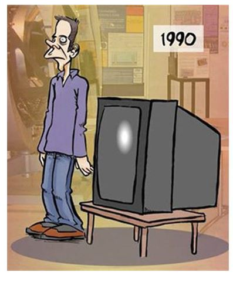

Que se puede hacer con javaScript?
javaScript cambia el contenido HTML
Muchachos este es un parrafo que tiene un id="delta".
javaScript cambia cambia los valores de los atributos HTML
En este caso, JavaScript cambia el valor del atributo src (fuente) de una imagen..

javaScript cambia los estilos HTML (CSS)
JavaScript puede cambiar los estilos de un elemento HTML.
javaScript puede ocultar y mostrar elementos HTML
JavaScript can hide HTML elements.
¿Como implementar los script?
etiquetas script en el body
Este es un parrafo.
Demostración de java script externo
Este es un parrafo.
Posibilidades de visualización de JavaScript
Usando innerHTML
Usando document.write()
My first paragraph.
Usando window.alert ()
Declaraciones java script